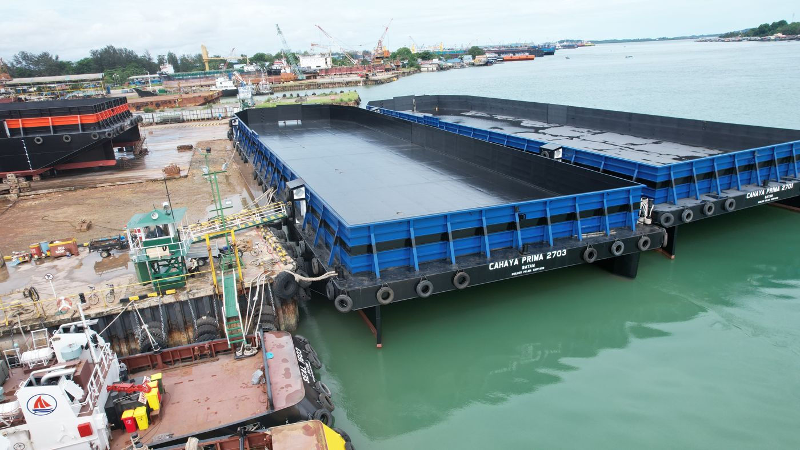

ArmadaJanuari – Juni 2026
Sembilan kapal baru bergabung dengan armada
Tiga tug (Seal 1603, Cahaya 1602, Cahaya 1603) dan enam barge (Sea Lion 2701, 2702, 2703 serta Cahaya Prima 2701, 2702, 2703) bergabung dengan armada antara Januari dan Mei 2026.